ALL English · All Level Learner's English
English organised the way the CEFR organises it — A1 through C2, with over 8,000 words carrying IPA pronunciation, exam collections from Oxford 3000 to IELTS and CET-6, graded reading, timed level tests, and two hands-free listening modes you can run with the screen in your pocket. This page explains every screen and walks through the features worth setting up first.
Two ways to slice the same vocabulary
By CEFR level if you are learning broadly, or by collection if you are aiming at a specific exam. The lists overlap on purpose — a word can be both B2 and IELTS.
| Level | Roughly | Words |
|---|---|---|
| A1 | Beginner — introduce yourself, order food, ask simple questions | 895 |
| A2 | Elementary — routine tasks, immediate surroundings, simple past | 858 |
| B1 | Intermediate — handle travel, describe experiences, give reasons | 802 |
| B2 | Upper intermediate — technical discussion, fluent spontaneous speech | 1,425 |
| C1 | Advanced — implicit meaning, flexible academic and professional use | 1,299 |
| C2 | Proficient — near-native precision and nuance | 788 |
| Collection | What it is |
|---|---|
| Basic 850 | Ogden's Basic English — the minimum vocabulary that can express almost anything |
| Oxford 3000 | The core words every learner should know, chosen by frequency and usefulness |
| Common 2198 | High-frequency everyday English |
| VOA 1510 | The Voice of America Special English word list — built for news listening |
| IELTS | Vocabulary weighted towards the IELTS exam |
| CET-4 · CET-6 | The Chinese College English Test syllabuses, band 4 and band 6 |
Sentences are graded the same way, plus four named sentence sets — Easy Sentences, Daily 500, English 900 and New English 365 — and there are graded reading articles and timed tests at every level from A1 to C2.
A guided tour of the app
Four tabs along the bottom: Home, Speaking, Listening and Settings.
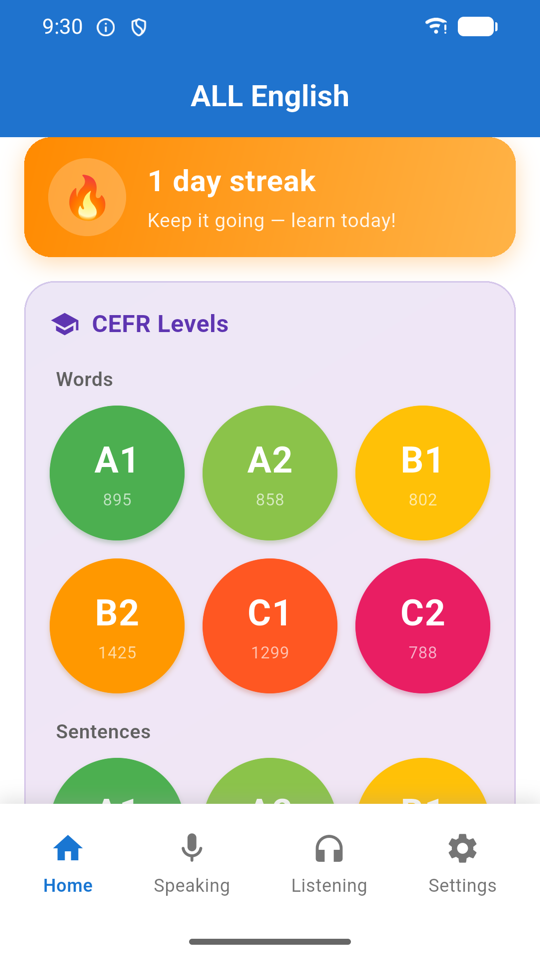
Home
The orange banner tracks your daily streak. Below it, Home is a stack of collapsible sections: My Favorites, CEFR Levels, Word Collections, Sentence Collections and Test.
The CEFR section has two rows of coloured circles — one for Words, one for Sentences — and each circle shows how many entries that level holds. Tap one to start. If the screen feels busy, you can switch whole sections off in Settings.
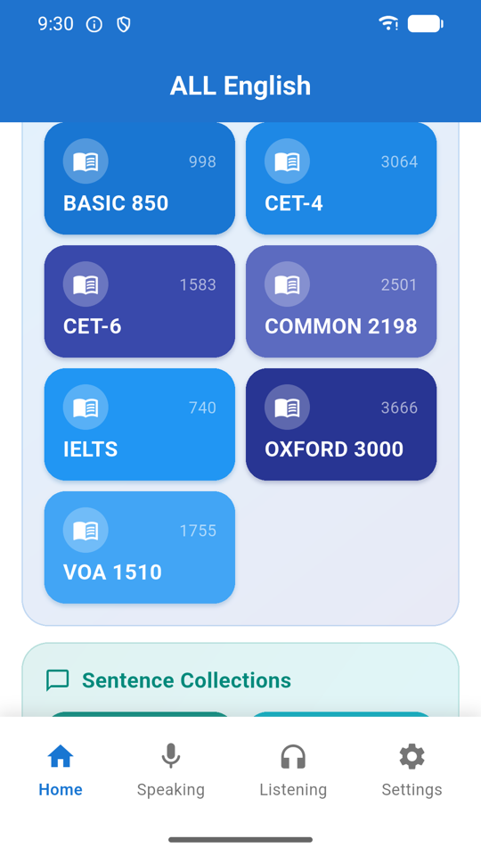
Word collections
Seven tiles, each with the number of words tagged to it. These cut across the CEFR levels — a word can appear in both B2 and IELTS — so pick a collection when you have a specific target (an exam, a news-listening habit) and a CEFR level when you just want to get better generally.
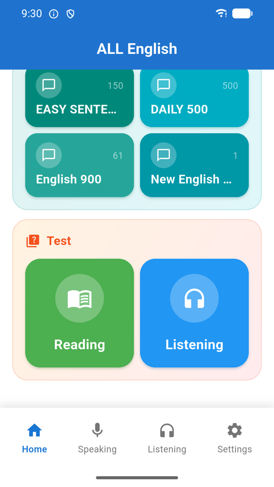
Finding the tests
The Test section offers Reading and Listening. Taking one at a level you are unsure about is the quickest honest answer to "where am I?" — much faster than reading level descriptions and guessing.
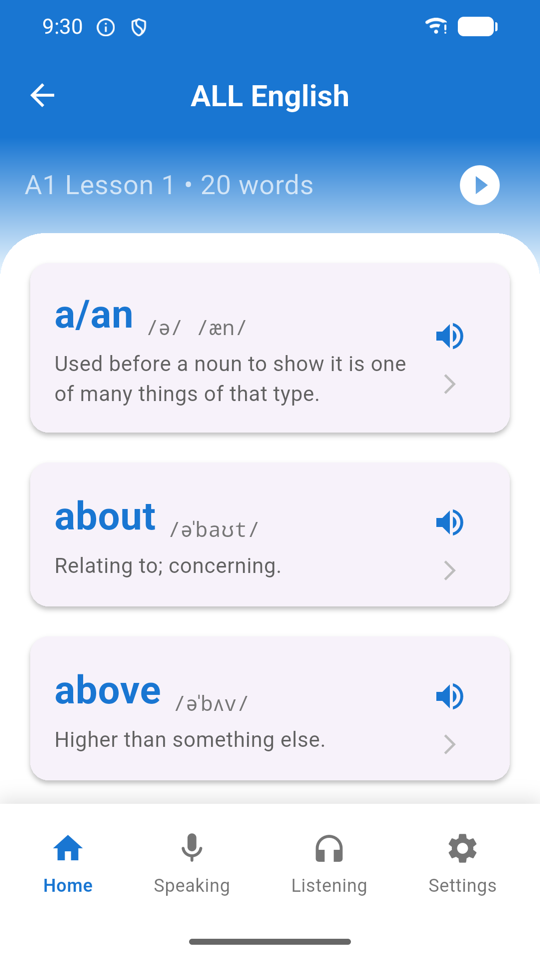
Word lists
Levels are split into short lessons rather than one endless scroll. Each row shows the word, its IPA and its meaning, with a speaker to hear it and a heart to save it. Hearted words gather in My Favorites at the top of the home screen, which shows a live count and rotates a preview of one saved word and one saved sentence.
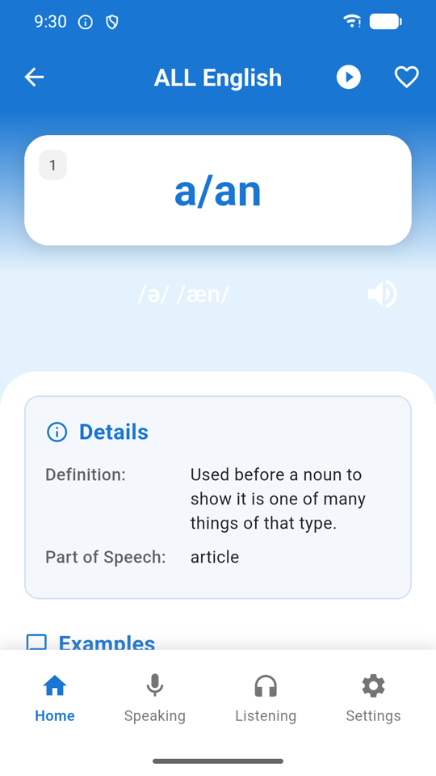
Word card
The word sits on a card with its IPA underneath — here /ə/ /æn/, showing both the weak and strong pronunciations — and a speaker button. Details gives the definition and part of speech; scroll on for example sentences with their own audio and translations.
The play button in the top bar auto-advances through the lesson hands-free. The heart beside it saves the word to your favorites.
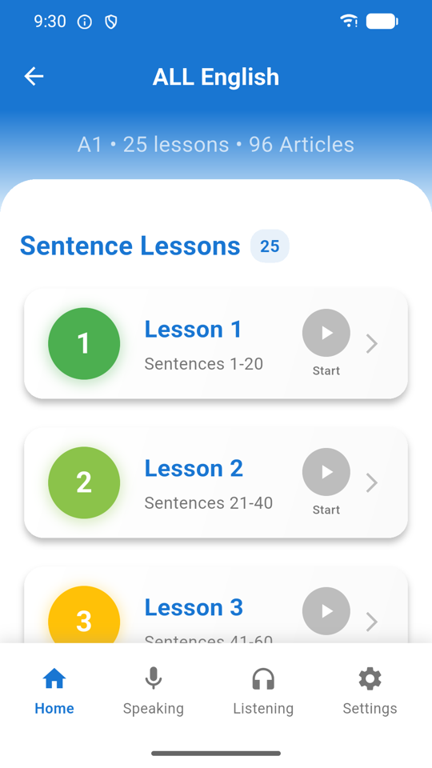
Sentences & articles
Sentences are graded by CEFR level and grouped into the named sets — Easy Sentences, Daily 500, English 900, New English 365. They can be hearted like words. Graded articles sit alongside them, played back a sentence at a time so you can loop the one line you did not catch.
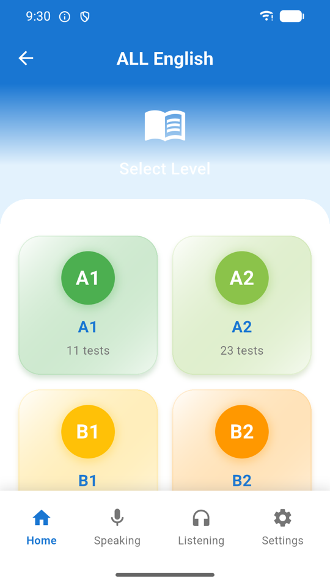
Choosing a test
Choose the type, then the level, then a specific test. An instructions screen explains the format first, so nothing about the timer or the scoring comes as a surprise once the clock starts.
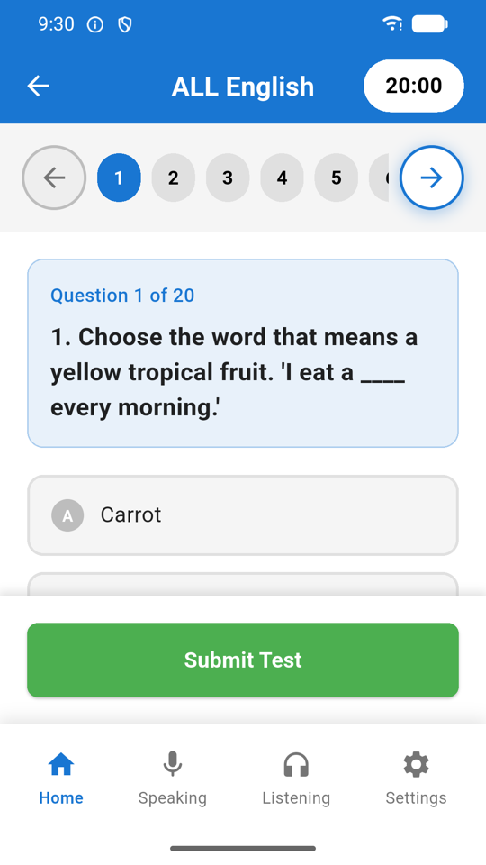
Taking a test
The countdown sits in the top bar and the numbered strip beneath it lets you jump to any question — you do not have to answer in order, so skip anything that stalls you and come back. Submit Test scores it immediately, and the result is kept so you can watch a level improve over several attempts.
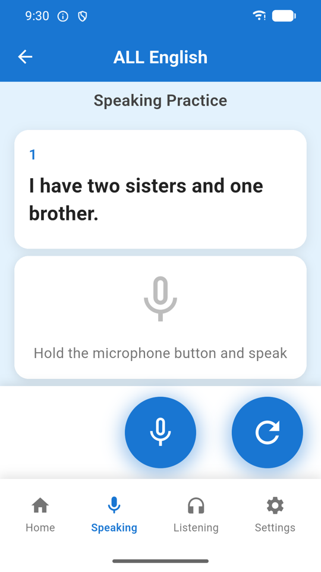
Speaking practice
A sentence appears; you read it aloud. Your device transcribes what it heard and the app scores how closely that matches the target. It is judging whether you would be understood, not whether you sound British or American — so a quiet room and a granted microphone permission matter more than your accent.
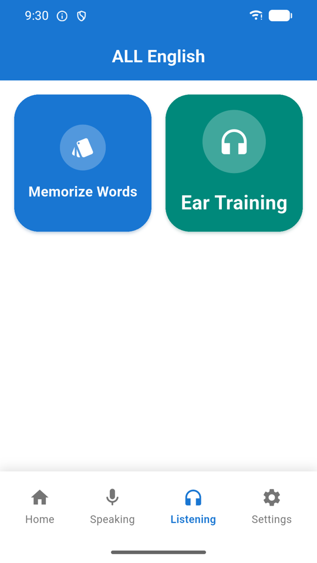
The Listening hub
Two buttons, and between them the most distinctive thing about this app. Memorize Words auto-plays vocabulary; Ear Training auto-plays sentences. Both run without you touching the screen, which makes them usable while commuting, walking, cooking or falling asleep.
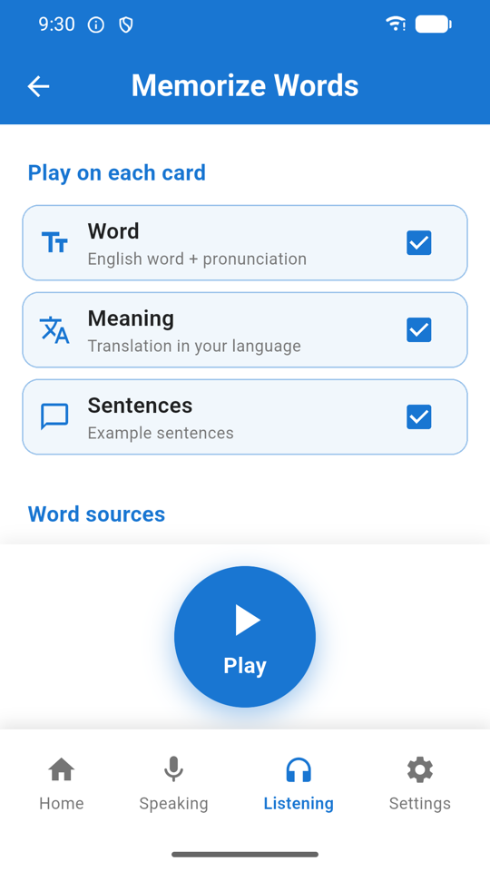
Memorize Words — setup
Play on each card controls what gets spoken: the Word with its pronunciation, the Meaning in your chosen language, and the example Sentences. Turn off whichever you do not need — word-only is fast revision, all three is a proper study loop.
Word sources below chooses what to pull from — any mix of CEFR levels and collections. Then press Play. Any sessions you started before are listed here too, with their progress, their source, and when you last used them, so you can resume one rather than start over.
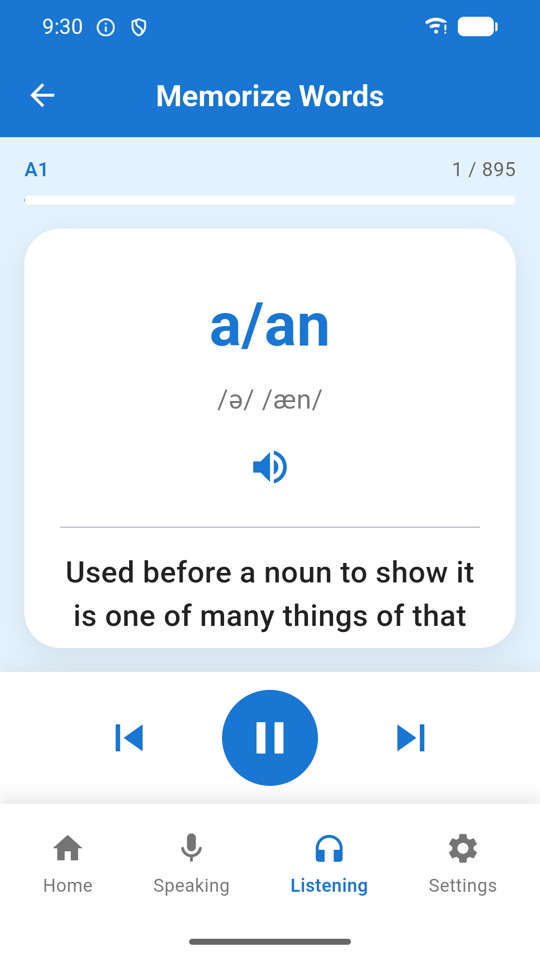
Memorize Words — playing
The card speaks the word, then the meaning, then the sentences, then moves on, looping through your chosen sources. You can pause, resume and step manually at any point. Your position is saved automatically, so closing the app mid-session loses nothing.
The gap between utterances is sized from how long the text is, so a long Chinese or Arabic translation is not clipped by the next line starting too early.
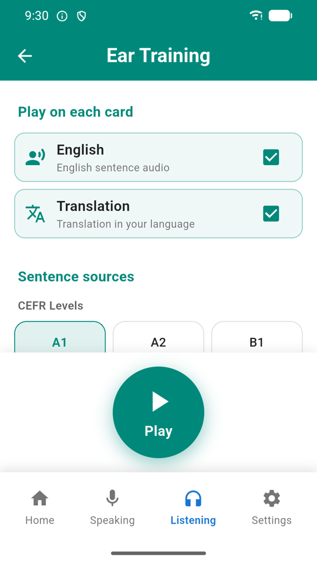
Ear Training
Same pattern as Memorize Words, but for whole sentences: choose whether to hear the English, the translation, or both, pick your sentence sources from the CEFR levels and named sets, and press Play. Sessions are resumable in exactly the same way.
This is the one to run in the background. Vocabulary lists teach you words; sentences teach you rhythm, contraction and connected speech — the reasons a native speaker is hard to follow even when you know every word they used.
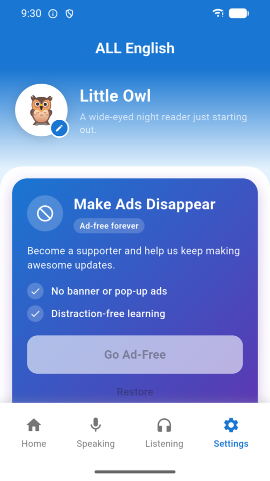
Settings
At the top is your learner identity — tap the pencil to change the avatar and name. Below it, Make Ads Disappear is the one-off Remove Ads purchase, with Restore underneath for when you change device.
Further down: My Language (English, Chinese, Spanish or Arabic — the interface follows your choice, including right-to-left layout for Arabic), speech rate and voice pickers, an auto-play toggle for sentences, and Home buttons — which is more useful than it sounds. See below.
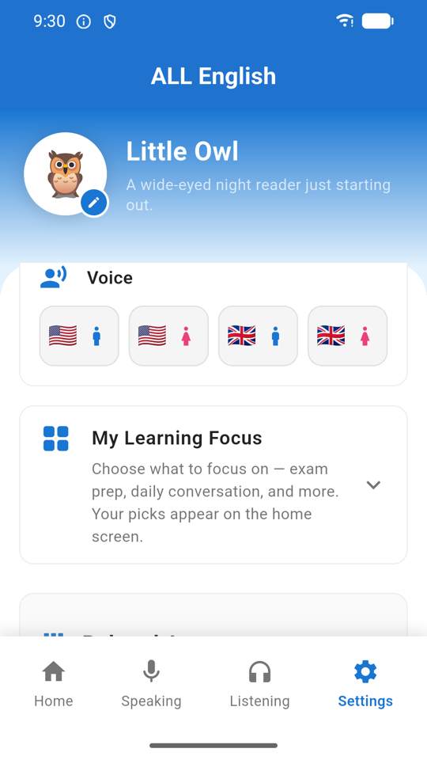
Voice & speed
The app speaks through the voices installed on your device, listed here by name so you can pick the accent you want to train your ear on. The speech rate slider sits alongside — worth slowing down for Ear Training, and worth speeding up once a level starts feeling easy.
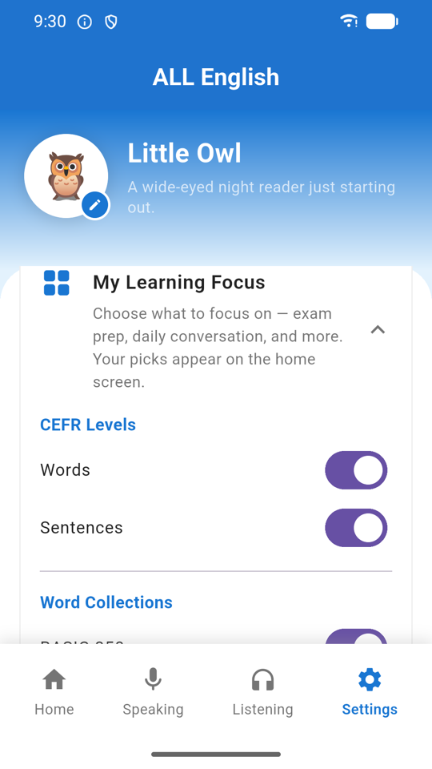
Home buttons
Switch off the CEFR levels, word collections or sentence collections you are not working on. The obvious benefit is a tidier home screen. The less obvious and more useful one: anything hidden here also disappears from the Memorize Words and Ear Training source lists.
So if you are preparing for IELTS, turn everything else off once and every auto-play session you start afterwards will be IELTS-only, without reconfiguring it each time.
Three things to do in your first session
Find your real level
- On Home, scroll to Test and choose Reading.
- Pick the level you think you are — most people guess one band high.
- Read the instructions, then take the test. Twenty questions, twenty minutes.
- Skip anything that stalls you using the numbered strip at the top, and come back to it.
- Submit Test and look at the score. Comfortably above 80%? Move up a level. Under 60%? Move down.
- Now open the word list for that level and start there — not at A1, and not at the level you wish you were.
Set up a commute listening session
- Open Settings → Home buttons and switch off every level and collection except the one you are studying.
- Go to the Listening tab and tap Memorize Words.
- Under Play on each card, keep Word and Meaning; turn off Sentences for a faster loop.
- Check that Word sources shows only what you want — it will, because of step 1.
- Adjust the speech rate in Settings if it runs too fast, then press Play and pocket the phone.
- Tomorrow, open the same screen and resume the saved session instead of starting a new one.
Build a favorites list that earns its keep
- Open any word list and read down it.
- Heart only the words you did not know — not the ones that look interesting.
- Do the same in a sentence list; sentences and words are saved separately.
- Back on Home, open My Favorites — it shows live counts and previews one of each.
- Work through favorites as its own list. A short list of genuine gaps beats a long list of nice-to-haves.
- Unheart words once they stick, so the list stays a to-do rather than a scrapbook.
If the audio is silent or sounds wrong
ALL English speaks through the text-to-speech engine built into your device rather than shipping recordings, which is how every one of the 8,000+ words has audio. English voices are installed by default on nearly every phone, so this usually just works — but two things are worth knowing.
No sound at all? Check your ringer switch and volume first — text-to-speech follows the media volume, not the ringtone volume. Then open Settings → Voice and confirm a voice is selected. On Android, make sure a text-to-speech engine is installed and enabled in your device's accessibility settings.
Meanings not being spoken? The meaning is read in your chosen translation language, so your device also needs a voice for that language. If you have set My Language to Chinese or Arabic and hear only the English, install that language's voice on your device.
Once it is working, use Settings → Voice to pick the accent you want to train on, and the speech rate slider to set the pace. Slower for Ear Training when a level is new; faster than natural once it feels easy — that is what makes real speech feel slow by comparison.
Which version should you use?
| Feature | Web | Android app |
|---|---|---|
| All CEFR levels, collections, articles and tests | Yes | Yes |
| Nothing to install | Yes | — |
| Memorize Words & Ear Training auto-play | Browsers throttle speech in background tabs | Yes, runs hands-free |
| Speaking practice with the microphone | Unreliable in most browsers | Yes |
| Works without a connection | — | Content is stored on the device |
| Remove Ads purchase | — | Yes, one-off |
| Favorites and streak survive between visits | Kept in your browser only | Kept on the device |
The listening modes are the reason to install the app: a browser will not keep speaking once the tab loses focus, which is exactly when you want it to.
Common questions
Which CEFR level should I start at?
A1 is absolute beginner, C2 is near-native. Rather than guessing, take a reading test at the level you think you are — the first walkthrough above explains how to read the result. Most people place themselves one band too high.
What is the difference between Memorize Words and Ear Training?
Both play automatically so you can listen without touching the screen. Memorize Words cycles through vocabulary — word, then meaning in your language, then example sentences. Ear Training does the same for whole sentences. Both save your position so you can stop and resume exactly where you were.
What are the collections like Oxford 3000 and CET-4?
Curated lists that cut across the CEFR levels. Basic 850 is Ogden's minimum working vocabulary, Oxford 3000 the core learner word list, Common 2198 high-frequency everyday English, VOA 1510 the Voice of America Special English list, and IELTS, CET-4 and CET-6 are exam vocabularies. Use a level to learn broadly, a collection to target an exam.
Is ALL English free?
Yes. Every level, collection, article and test is unlocked from the start. The app is funded by ads, with one optional in-app purchase — Remove Ads — that hides them permanently. No learning content is behind a paywall.
Can I see meanings in my own language?
Yes — Settings → My Language, with English, Chinese, Spanish and Arabic available. The interface follows the same choice, including right-to-left layout for Arabic.
My home screen is cluttered. Can I hide sections?
Yes, in Settings → Home buttons. Worth knowing: hidden sources also disappear from the Memorize Words and Ear Training setup screens, so this is the easiest way to keep every auto-play session focused on one exam or level.
How does Speaking Practice score me?
Your device's speech recogniser transcribes what you said and the app compares it to the target sentence. It measures whether you would be understood rather than your accent, so a quiet room and a granted microphone permission matter more than sounding native.
Will I lose my progress if I reinstall?
Yes. There is no account and no cloud sync — favorites, streak, test results and saved listening sessions are stored only on your device, so uninstalling clears them.
I bought Remove Ads but the ads came back.
Open Settings and tap Restore on the ad-free card. The app also re-checks with Google Play on every launch, so confirm you are signed in with the account you purchased on. If it still will not restore, get in touch.
Is the web version the same as the Android app?
Same content, fewer capabilities — see the comparison table. The auto-play listening modes in particular need the Android app, because browsers stop speaking once the tab loses focus.
Start at your level
Try it in your browser, or install the Android app for offline study and hands-free listening.